SecretFilesマニュアル
3. SecretFilesサービス(解説編)
3.2 各ペインの説明
3.2.3 中央ペイン
中央ペインには、次のタブが表示されています。

* ログインした方の権限によって、表示されるタブは異なります。
* このマニュアルでは、通常のご利用者が利用することのできる機能についてのみ説明します。
* ログインした方の権限によって、表示されるタブは異なります。
* このマニュアルでは、通常のご利用者が利用することのできる機能についてのみ説明します。
3.2.3.3 アクセス権設定
SecretFilesには、管理しているフォルダ、ファイルに対する利用者からのアクセス権の設定やそれらの変更が行なわれた時のメール通知機能があります。
中央ペインの上部に表示されている「アクセス権設定」タブをマウス左クリックして下さい。
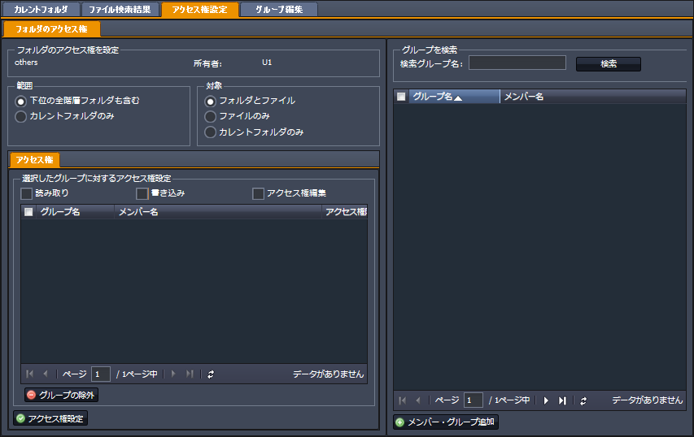
* 選択しているフォルダ、ファイルにアクセス権設定権限がない場合などには、このタブが表示されなかったり、表示されていても選択できなかったりすることがあります。
●フォルダのアクセス権
左ペインのフォルダツリーにていずれかのフォルダを選択している場合、あるいはファイル全体表示にてフォルダを選択している場合に、そのフォルダのアクセス権を変更することができます。
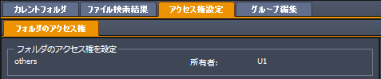
画面の左上には、対象のフォルダそのそのフォルダの所有者名が表示されます。
設定対象
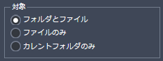
設定の対象が該当の「フォルダのみ」なのか「フォルダ内のファイル」のみなのか、あるいは「フォルダとフォルダ内ファイル」なのかを選択します。
設定範囲
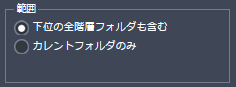
また、その設定範囲が該当の「フォルダ」のみなのか、その「フォルダとその下位の全階層のフォルダ」なのかを選択します。
選択したグループに対するアクセス権設定:
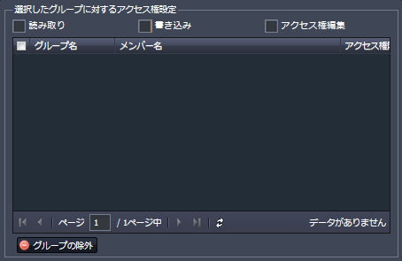
直下に表示するグループのリストに対して、読み取り/書き込み、アクセス権編集を可能にすることを選択します。
ここで指定するグループは、「フォルダのアクセス権」ペインの右側に表示されているグルーブ選択ペインにて「メンバー・グループ追加」ボタンを押して選択します。
メンバー・グループ追加
上部に表示されている「検索グループ名」の欄に任意の文字列(検索しようとしているグループ名のすべてあるいは一部)を入力して、「検索」ボタンを押します。
すると、該当するグループが一覧表示されますので、リストの左側にあるチェックボックスをチェックして最下部にある「メンバー・グループ追加」ボタンを押します。
ここで選択したグループは、左側の一覧に追加されます。
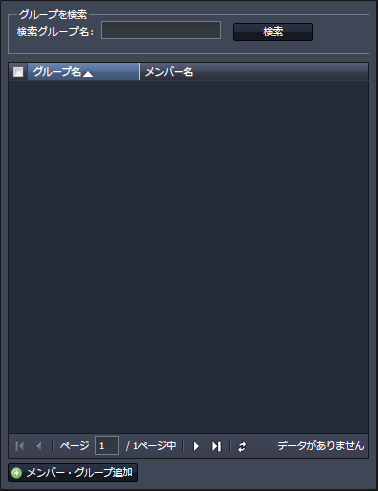
既に一覧表示されているグループを設定から除外する場合には、リストの左端のチェックボックスをチェックし、「グループの除外」ボタンをクリックします。
グループの除外
表示されているグループを除外する場合には、「グループの除外」ボタンをマウス左クリックします。
中央ペインの上部に表示されている「アクセス権設定」タブをマウス左クリックして下さい。
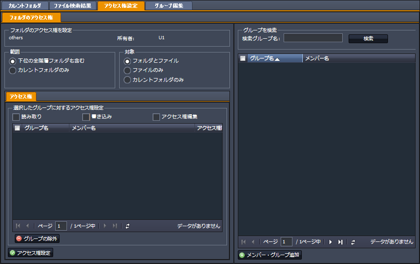
* 選択しているフォルダ、ファイルにアクセス権設定権限がない場合などには、このタブが表示されなかったり、表示されていても選択できなかったりすることがあります。
●フォルダのアクセス権
左ペインのフォルダツリーにていずれかのフォルダを選択している場合、あるいはファイル全体表示にてフォルダを選択している場合に、そのフォルダのアクセス権を変更することができます。
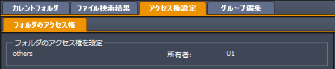
画面の左上には、対象のフォルダそのそのフォルダの所有者名が表示されます。
設定対象
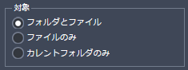
設定の対象が該当の「フォルダのみ」なのか「フォルダ内のファイル」のみなのか、あるいは「フォルダとフォルダ内ファイル」なのかを選択します。
設定範囲
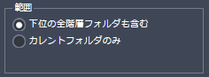
また、その設定範囲が該当の「フォルダ」のみなのか、その「フォルダとその下位の全階層のフォルダ」なのかを選択します。
選択したグループに対するアクセス権設定:
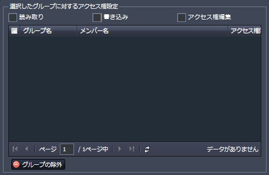
直下に表示するグループのリストに対して、読み取り/書き込み、アクセス権編集を可能にすることを選択します。
ここで指定するグループは、「フォルダのアクセス権」ペインの右側に表示されているグルーブ選択ペインにて「メンバー・グループ追加」ボタンを押して選択します。
メンバー・グループ追加
上部に表示されている「検索グループ名」の欄に任意の文字列(検索しようとしているグループ名のすべてあるいは一部)を入力して、「検索」ボタンを押します。
すると、該当するグループが一覧表示されますので、リストの左側にあるチェックボックスをチェックして最下部にある「メンバー・グループ追加」ボタンを押します。
ここで選択したグループは、左側の一覧に追加されます。
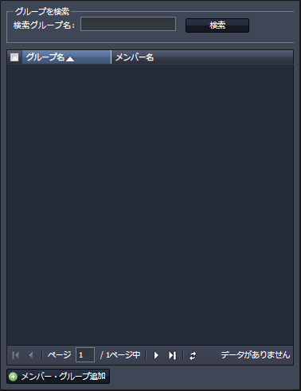
既に一覧表示されているグループを設定から除外する場合には、リストの左端のチェックボックスをチェックし、「グループの除外」ボタンをクリックします。
グループの除外
表示されているグループを除外する場合には、「グループの除外」ボタンをマウス左クリックします。